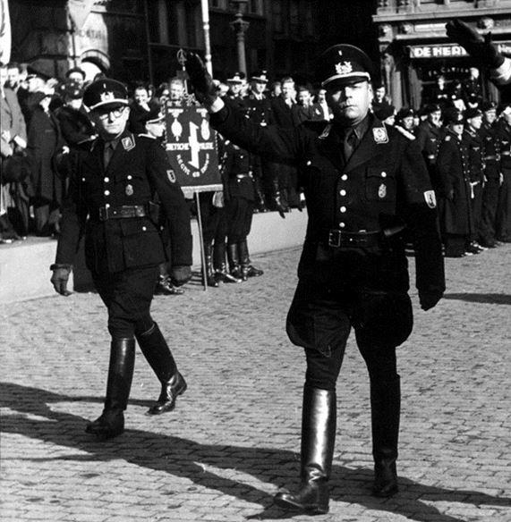
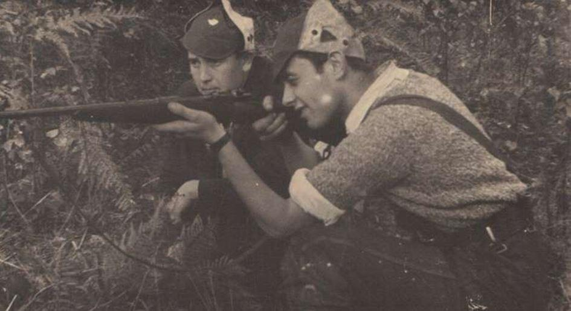
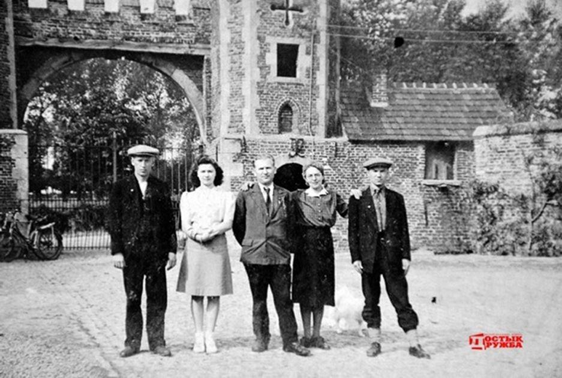
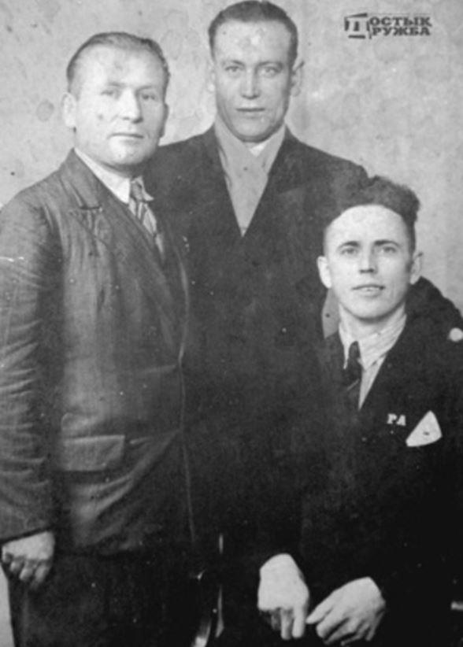
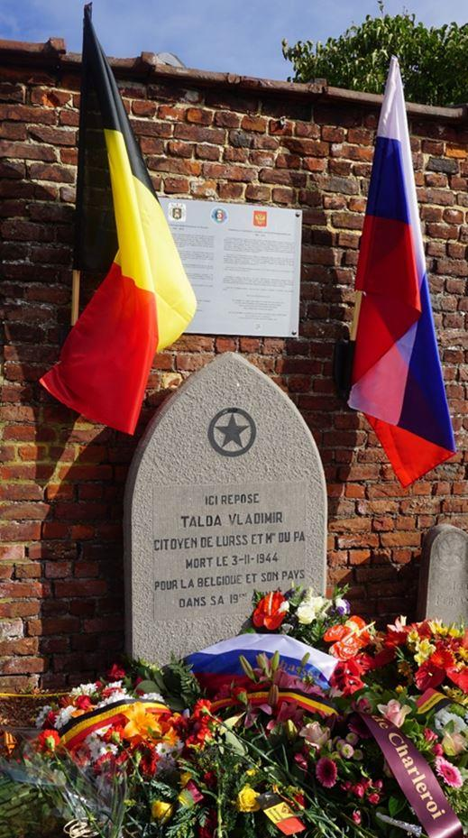
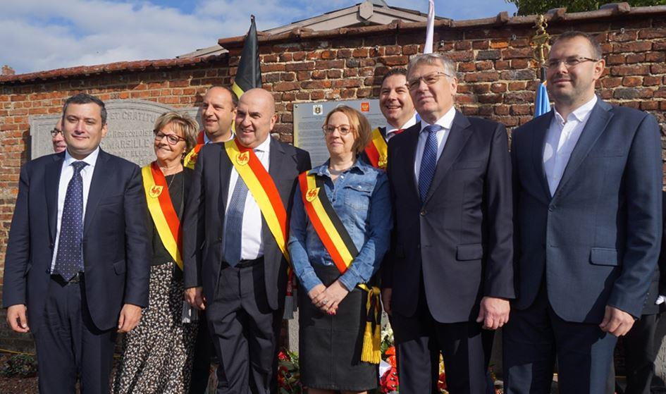
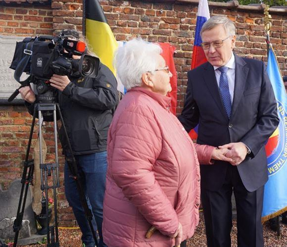
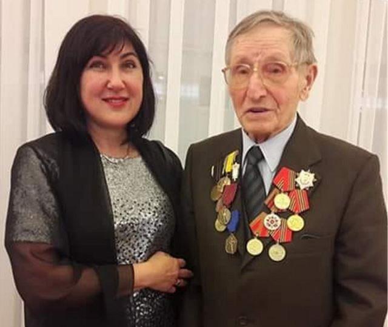
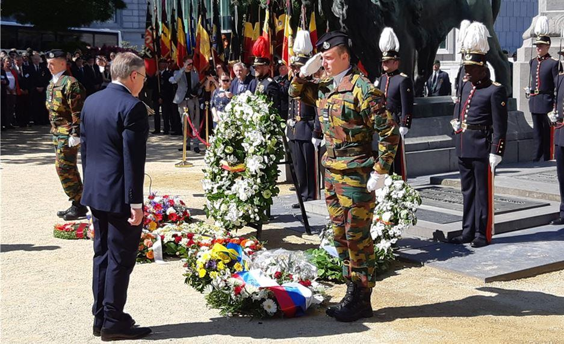

Depuis juillet 1944, nous avions le contrôle de la région des Ardennes et six jours avant les Alliés. Nous avons libéré cette région des occupants nazis. »
Grigory Yakovlevich Slonimsk
(1923-1985)
De 1940 à 1944, la Résistance belge développa une organisation complexe. La lutte contre l'occupant, entamée dès l'été de 1940, produisit des structures qui en firent une organisation hiérarchisée et ramifiée. On a recensé quinze mouvements de résistance : L’Armée Secrète est née en 1940, par la volonté de militaires qui refusaient de déposer les armes. Dépendants du Gouvernement belge de Londres, elle avait pour mission de désorganiser les nazis, d’organiser un soulèvement à la Libération et avait une mission de renseignements pour les Alliés. Le Front de l’Indépendance est fondé en 1941. Dirigé par un comité central comptant un représentant de chaque parti politique, il compte un grand nombre de communistes. Ils ont été rejoints par l’Armée Belge des Partisans et est devenu le mouvement le plus important. Le nombre de Résistants belges tués par l'ennemi fut de 19.000 sur un total de 70.000 actifs.
Comme tout pays occupé, la Belgique comptait son lot de collaborateurs : à la fin de la guerre, environ 80 000 belges ont été jugés coupables de collaboration avec l'ennemi. La collaboration militaire et politique tient une place centrale avec des mouvements tels que Rex (francophone), le Vlaams Nationaal Verbond ou des divisions militaires comme la division SS Wallonie et SS Langemarck (flamande). La collabo-ration économique n'est cependant pas en reste : des entreprises ont accepté de travailler pour l'occupant, moins par sympathie pour l'idéologie nazie que pour maintenir leur compétitivité. Sur le plan culturel, la collaboration fut souvent le fait d’écrivains et de journalistes de la presse écrite et de la radio.
Belges et Soviétiques dans le maquis
Le 22 juin, Hitler lance l’opération « Barbarossa ». Malgré une résistance héroïque, mal préparés à une attaque de cette ampleur, les Soviétiques sont capturés par dizaine de milliers. Certains sont sommairement exécutés, les autres sont déportés vers l’Ouest tandis que des prisonniers d’Europe de l’Ouest et des S.T.O. sont envoyés en Allemagne en remplacements des travailleurs mobilisés. En Belgique, ils étaient environs vingt mille répartis dans différents camps situés près des zones industrielles.
Nous estimons le nombre de Partisans soviétiques en Belgique à un millier de personnes. Ils provenaient principalement des mines de charbon de la région liégeoise, du Limbourg ou du Hainaut (et dans une moindre mesure du Nord de la France). D’autres venaient du sud et sud-est de la Belgique, où ils devaient travailler dans des exploitations agricoles et forestières.
La première forme d’insubordination est la résistance passive, le sabotage du travail (acte pour lequel ils encouraient la peine de mort). Rapidement, les prisonniers organisèrent des filières d’évasion.
Ces hommes étaient des combattants aguerris ayant déjà fait la preuve de leur bravoure et étaient souvent chargés de missions où ils faisaient face à l’ennemi.
Rebecq : lutte à mort à un contre dix
En avril 1944, une quinzaine de Soviétiques sont arrivés à Rebecq (Brabant wallon), où ils ont été pris en charge par les Partisans Armés belges et répartis dans les fermes environnantes, où il est aisé de se cacher en cas d’inspection par les Allemands.
Parmi eux, Stepan Afanasyevitch Dorogov (1913-1971). Blessé et fait prisonnier à Stalingrad, Stepan Afanasyevitch est interné dans un camp en Ukraine avant d’être transférés en Allemagne, puis en France où il a travaillé dans des mines de charbon (1943-1944).
Fréquemment puni pour insubordination, il s’évade en compagnie d’une douzaine d’autres prisonniers. Le groupe arrive en Belgique un soir d’avril 1944. Lors d’une mission, André Kestemont (chef du réseau des Partisans Armés pour la région de Rebecq-Braine-le-Comte-Tubize) embarque les fugitifs dans sa camionnette et disperse ces nouveaux combattants par groupes d’environ quatre hommes. Ces groupes sont mobiles et rapidement transférables en cas de nécessité. Un autre groupe d’environ vingt personnes est également signalés à Hoves (Silly). Ils rejoignent ceux de Rebecq suite à une descente de la Gestapo. Ils sont régulièrement transférés d’un endroit à un autre en raison de dénonciations.

Photo montrant de gauche à droite Stepan Dorogov, La fille du fermier Tondeur, Vasil Denisevitch, l’épouse du fermier, née Horlait et Vladimiir Talda. L’arrière de la photo montre clairement que la photo a été prise dans la cour de la ferme (Photo: Droztyk Magazin
Les Résistants des deux nationalités participent à des transports d’armes et d’explosifs, des exécutions d’ennemis ou de collaborateurs. Certains groupes étaient chargés d’éliminer des délateurs notoires, repérés par les facteurs qui gardaient systématiquement les lettres adressées à la Kommandantur.
La ligne de chemin de fer qui traverse les communes de Tubize, Quenast, Rebecq et Braine-le-Comte est sabotée à plusieurs reprises. Elle s’avérait stratégique pour les Allemands qui l’utilisaient pour acheminer de l’armement et du matériel militaire.
Le 2 septembre, avant-veille de la libération de la ville, les Partisans soviétiques ont participé activement aux combats qui ont eu lieu au lieu-dit le Montgras. Les Allemands s’y retrouvent à environ cent-cinquante hommes et plusieurs blindés. Les Résistants présents sur les lieux du combat n’étaient qu’une quinzaine et l’affrontement fut très rude. Stepan et ses compagnons s’étaient réfugiés dans une grange à laquelle les Allemands mirent le feu. Grâce à la présence d’esprit d’un des Partisans, ils purent se réfugier dans une fosse et ainsi échapper à une mort certaine. Quant à l’ennemi, il perdit dix soldats dans les combats.
Le 4 septembre les victimes des combats furent enterrées. Les Résistants, dont Vladimir Talda était le seul étranger, eurent des funérailles en présence d’une foule nombreuse. Cinq Soviétiques se firent ensuite inscrire dans le registre de la population. Ils furent domiciliés chez André Kestemont). Ils avaient souhaité visiter Paris avant de retourner en en URSS et les habitants se sont organisés pour exaucer leur souhait. Ils restèrent ensuite quelques mois au village avant de rentrer chez eux. Nul ne sait ce qu’ils sont devenus, à l’exception de Stepan. Dès son arrivée, il est envoyé dans un camp à Solovki, dans le nord de l’URSS.

Vasil Denisovish, médecin biélorusse, Stepan Dorogov et Talda
Grâce aux démarches entreprises par les Partisans Armés et les autorités belges, il est libéré et est envoyé en Extrême-Orient pour se battre contre les Japonais. Ce n’est qu’en 1947 qu’il revient chez lui, au Kazakhstan.
Le soldat Vladimir Talda est inhumé au centre du carré des membres belges de la Résistance. Une dalle de granit érigée à proximité présente l’épitaphe suivante en langue française : « Ici repose Talda Vladimir, Citoyen de l'URSS et m. du PA. Mort le 3-11-1944 pour la Belgique et son pays dans sa dix-neuvième année »
Le 12 octobre 2019, la cérémonie d'inauguration du mémorial aux Partisans soviétiques ayant combattu dans les rangs de la Résistance belge a eu lieu à Rebecq. Une plaque commémorative a été placée dans le cimetière municipal auprès de la tombe du soldat Vladimir Talda.
La cérémonie était organisée par l'association « Belgians remember them », les autorités de la commune de Rebecq, avec le soutien de l'Ambassade de Russie en Belgique. l’Ambassadeur S.E. Alexander Tokovinin et de nombreux diplomates étaient présents, en compagnie de personnalités politiques et militaires belges, des organisations patriotiques et des cercles russophones.

Le député de la Duma Aleksander E. Khinstein (1er à g.), l'Ambassadeur de la Fédération de Russie S.E. Azlexander A. Tokovinin (2e à droite) et le Secrétaire général du service historique du gouvernement, Konstantin I. Mogilevsky (1er à droite) en compagnie des autorités locales de Rebecq.
L'invitée d'honneur de l'événement était la doyenne de la commune, fille du chef de la branche locale de la Résistance, Maryse Kestemont. Le député de la Douma, coordinateur du projet de « Mémoire historique », Alexandre Khinshtein et un membre du présidium de la Société historique russe Konstantin Moguilevsky ont fait le déplacement de Moscou pour participer à l’inauguration du mémorial.

S.E. Aleksander A. Tokovinin et Maryse Kestermont, fille du chef de la Résistance locale, dernier témoin de la libération de sa ville.
Pont-à-Celles : Ivan Alexandrovitch Bashkatov, mémoire vive
En juin 1941, le lieutenant Ivan A. Bashkatov, (1921) est blessé et envoyé par les nazis dans un camp en Pologne. En 1943, il est transféré à Charleroi pour y travailler dans les mines de charbon. « Les Belges nous aidaient pour la nourriture, des prisonniers fabriquaient de l’artisanat qu’ils échangeaient contre du pain. Cela permettait d’espérer, d’envisager de m’évader », se souvient Ivan Alexandrovitch. Un soir, ils sont quatre à faire le mur, les balles des sentinelles sifflant à leurs oreilles. Après s’être cachés durant trois jours, ils ont – tout comme cinq autres Soviétiques – rejoint les rangs des Résistants de Pont-à-Celles, ville où réside encore actuellement notre héros. « Les Belges dirigeaient les opérations. Nous agissions de nuit, par temps de pluie ou de brouillard. Nous étions prêts à tout contre l’ennemi ». Ivan Alexandrovitch ne cesse de souligner l’héroïsme des Belges qui protégeaient les évadés soviétiques. Ceux-ci se chargeaient entre autre des actes de diversion de sabotage ou du transport. Ils récupéraient– par exemple – les armes parachutées par les Britanniques. En septembre 1944, fort de son expérience, il aide la Mission militaire soviétique à organiser le rapatriement des soldats en URSS. Lorsqu'on lui propose de rentrer dans sa patrie en 1949, il justifie son refus par le fait qu'il a une fille de trois ans de son épouse belge. En 1945, Ivan Alexandrovitch avait épouse Marcelle, fille de résistants belges qui l’ont caché après son évasion. Ils ne se sont jamais quittés. Sa fille aînée, Nina, est née en 1946 et Bashkatov s’est installé définitivement en Belgique, où il a travaillé comme mécanicien jusqu’à sa retraite.
Le lieutenant Bashkatov a la double nationalité et la reconnaissance des deux pays : le certificat russe de vétéran de la Seconde Guerre mondiale ainsi que le certificat belge de Résistance. Des décorations belges et russes et deux patries dans le cœur.

Ivan A. Bashkatov en compagnie d'Ella G. Bondareva, (Association « Méridian », co-auteur de la plaquette « Résistants soviétiques en Belgique - 1941-1944 »)
Le 12 mars 2020, il a reçu la Médaille commémorative des 75 ans de la victoire à l’Ambassade de Russie à Bruxelles.
Le souvenir de nos Héros
Sous l’intitulé « Tombes des prisonniers de guerre et des partisans morts en Belgique pendant la Seconde Guerre mondiale », le site de l’Ambassade de la Fédération de Russie à Bruxelles présente un inventaire détaillé de ces monuments dans plus de cinquante communes belges
Pour chaque lieu, on peut consulter l’inventaire des sépultures, accompagnées d’une notice biographique du combattant et des informations sur les monuments, le tout abondamment illustré.

J-L. E.
SOURCES
Onoutchko, Victor : « Deux patries dans un cœur », Russia Beyond, mai 2012.
http://www.rewisbique.eu/bib23t.php
https://belgium.mid.ru/fr_FR/home, onglet « ambassade », tombes de guerre.
Partager cette page